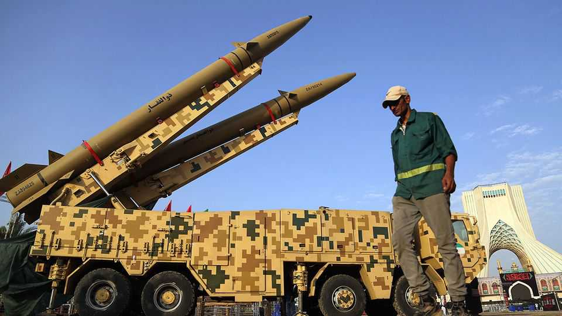

New strikes in Iran show the weakness of Donald Trump’s deal
The two sides are trapped in a cycle of fighting and half-baked attempts at diplomacy

Jul 30th 2026
THE CALENDAR says it is July, but the headlines look like April. The war between America and Iran has ebbed but not ended. The Strait of Hormuz is in effect shut, but Gulf states are trying to broker a deal that would reopen it, at least temporarily. Donald Trump retreated from his threat to launch a “massive attack” on Iran and claimed negotiations were going well, only for Iran to reject the latest proposed deal and fire another round of missiles.
That was the state of play for much of spring, until America and Iran signed an interim peace deal on June 17th. And so it is again. Under the terms of that “memorandum of understanding” (MOU), the two countries should be almost done negotiating a comprehensive pact to end five decades of hostility. Instead they are back to haggling over the strait. Even if diplomats manage to find a solution, which looks unlikely, it may be only a patch on a deal that was threadbare to begin with.
The MOU began to unravel on July 6th, when Iran attacked several oil and gas tankers. It did so to halt growing traffic through the southern side of Hormuz, which lies in Omani territorial waters and thus diminishes Iran’s control of the waterway. America then began almost two weeks of daily air strikes, mostly aimed at military targets and economic infrastructure in southern Iran. The regime launched missiles and drones at American bases in the Gulf and Jordan.
On July 24th, though, Mr Trump abruptly halted the bombing campaign. In public, American officials said they were keen to give diplomacy a chance. Privately some also worry about a dwindling supply of air-defence interceptors and fret that limited air strikes have little value. Iran also stopped attacking commercial ships, although that may have simply reflected a lack of targets: the number of vessels using the southern passage through Hormuz has dropped close to zero.
Last weekend a delegation of Omani officials visited Tehran for talks. Though Iran is not speaking directly to the Americans, Oman is acting as an intermediary. It offered Iran a proposal that includes a formal truce, perhaps lasting ten days, and a plan to reopen the strait. Iran and littoral Arab states would manage it through a joint mechanism. Ships would not pay a toll for transit, but the consortium could collect “voluntary contributions” for navigational aids, environmental services and the like, similar to what South-East Asian nations do in the Strait of Malacca.
In theory this offered everyone a face-saving compromise. Iran could say it had imposed a new arrangement on the strait, while America could say it had refused Iran’s demand for full control and mandatory fees. Gulf states would get free passage. The trouble is that Oman has proposed a similar arrangement in the past—only for Iran to repeatedly reject it.
Sure enough, it refused this one too. Kazem Gharibabadi, its deputy foreign minister, said on July 28th that any deal must give Iran full control over inbound traffic. Later that night Iran fired a barrage of missiles at an American base in Jordan. Mr Trump, never one for understatement, promised to “beat the fucking shit out of them”. Early on July 30th the Pentagon carried out another heavy round of air strikes.
Barely a month after it was signed, large parts of the MOU already look defunct. Its first clause said that America and Iran had agreed to a “permanent” end to their war. Forever is not what it used to be: sustained fighting resumed less than three weeks later. Another disagreement concerns tens of billions of dollars in Iranian assets that are frozen in foreign banks because of sanctions. Iran expected some of those funds to be released immediately, while the Trump administration insisted it would only release the money in stages if Iran complied with the deal.
The two sides should have been deep into 60 days of planned negotiations over a comprehensive deal to address America’s concerns about Iran’s nuclear programme and demand for long-lasting sanctions relief. Instead they have barely addressed these bigger issues. There have been no high-level talks at all this month, and the 60-day deadline will arrive on August 16th (though it can be extended by mutual agreement).
Mr Trump is in a bind. Escalating the war would be risky. Accepting Iran’s control over the strait would be an embarrassment at home and an affront to his Gulf allies. For now he seems inclined to stall for time. He bombed and threatened Iran until the price of Brent crude broke $100 a barrel on July 23rd. Then he reversed himself, which sent prices plummeting. He may hope to keep the war at a simmer while his blockade of Iranian ports squeezes the country’s economy—but Iran’s attack on Jordan was a reminder that Mr Trump alone does not dictate the pace of battle.
America’s allies in the region are concerned, and confused. Binyamin Netanyahu, the Israeli prime minister, met Mr Trump at the White House on July 28th. But it was an unusually discreet meeting. He was brought in through a side entrance and Mr Trump eschewed his usual scrum with reporters in the Oval Office. The next day Khalid bin Salman, the Saudi defence minister, made his own flying visit to Washington. The kingdom has been attacked recently by both the Houthis, a Shia militia in Yemen, and Iran-backed groups in Iraq.
America and Iran have been here before. Both agreed to the MOU because the economic pain from the war, and their duelling blockades of Hormuz, was becoming intolerable. But its vague language failed to resolve any of their underlying issues—and there is little reason to hope a new deal will do the job. ■